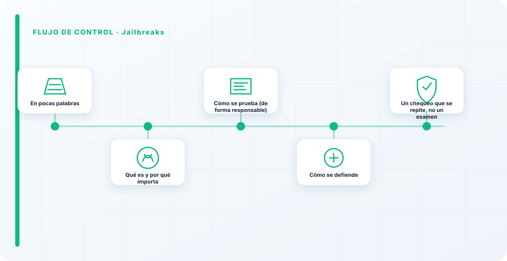
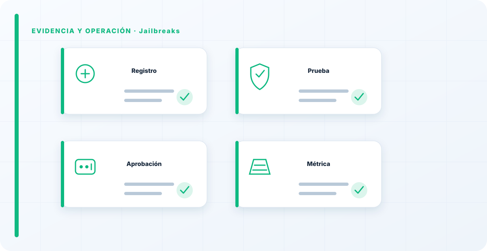

En pocas palabras
Un jailbreak es conseguir que el modelo se salte sus propias reglas: que diga o haga algo que su configuración de seguridad debería impedir. El red teaming de jailbreaks mide una cosa muy concreta y muy útil: ¿aguantan tus guardarraíles bajo presión, o ceden en cuanto alguien insiste con un poco de creatividad?
Qué es y por qué importa
Los jailbreaks importan porque los guardarraíles son, a menudo, la única barrera entre tu modelo y una salida dañina, y son más frágiles de lo que la gente cree. No es un problema teórico: un modelo de cara al público que cede a un jailbreak puede generar contenido que te cause un problema legal o reputacional serio.
Entender que los guardarraíles se pueden rodear es el primer paso para no depender solo de ellos, que es el error de diseño más común.
Cómo se prueba (de forma responsable)
El red team evalúa la robustez de los guardarraíles de forma sistemática y autorizada, viendo bajo qué tipo de presión ceden y en qué temas, para medir el margen real de seguridad. El objetivo no es coleccionar formas de romperlo, sino cuantificar cuánto aguanta y dónde está el punto débil.
Se prueba, se documenta el hallazgo, se refuerza, y se vuelve a probar. Es un ciclo, no un examen que se aprueba una vez.

Cómo se defiende
La defensa combina guardarraíles en varias capas, validación de la salida antes de mostrarla, y —de nuevo— no poner todo el peso en que el modelo "se porte": si una salida dañina no puede causar daño porque hay controles detrás, el jailbreak pierde gran parte de su valor.
Y reevaluar periódicamente es imprescindible, porque las técnicas evolucionan y lo que aguantaba hace seis meses hoy se rodea.
Un chequeo que se repite, no un examen
El error de fondo es tratar los guardarraíles como una casilla que se marca una vez y se olvida. Son una defensa viva que hay que reevaluar, porque el panorama de ataques no se queda quieto. Un red teaming de jailbreaks no es un examen que se aprueba y se archiva; es un chequeo que se repite en el tiempo. Quien lo hace una vez y se relaja se cree más seguro de lo que está, que es la posición más peligrosa de todas.
Un guardarraíl que solo has probado una vez es un guardarraíl en el que confías por fe, no por evidencia. Y la fe no aguanta a un atacante creativo con tiempo por delante.
Los errores que veo una y otra vez
- Tratar los guardarraíles como control único.
- Probarlos una vez y darlos por buenos para siempre.
- No validar la salida además del guardarraíl.
- Medir "¿se puede romper?" en vez de "¿cuánto aguanta?".
- No reforzar tras cada hallazgo.
Cómo lo llevaría a un entorno real
Cuando aterrizo jailbreaks en una organización, no empiezo por comprar una herramienta ni por redactar veinte páginas. Empiezo por dibujar qué ocurre hoy: quién solicita el cambio, quién lo aprueba, qué sistemas intervienen, qué datos cruzan el proceso y quién se entera cuando algo falla. Ese dibujo suele descubrir más problemas que cualquier checklist. En AI Red Teaming, lo peligroso no es solo carecer de controles; también lo es creer que existen porque alguien los escribió una vez.
Después separo lo imprescindible de lo deseable. Lo imprescindible debe poder comprobarse: un responsable identificado, una regla clara, una evidencia fechada y un mecanismo para reaccionar. En este caso revisaría especialmente Jailbreaks, responsable y control. No me vale una respuesta del tipo «lo gestiona el proveedor» o «eso lo mira seguridad». Necesito saber qué persona toma la decisión, con qué información y dentro de qué plazo.
La implantación debe crecer con el riesgo. Un piloto interno puede funcionar con una ficha breve y una revisión manual. Un sistema que afecta a clientes, empleados, dinero o información sensible necesita segregación de funciones, pruebas independientes, monitorización y un expediente mantenido. Mi criterio es sencillo: cuanto más difícil sea deshacer el daño, más fuerte debe ser la barrera antes de producción.
Decisiones que deben quedar por escrito
Hay decisiones que no deberían vivir en una reunión ni en un mensaje de chat. Para jailbreaks dejaría documentados el alcance, los supuestos, los límites de uso, las excepciones aceptadas y las condiciones que obligan a detener o reevaluar. El documento no tiene que ser enorme, pero sí debe permitir que otra persona entienda por qué se hizo lo que se hizo.
También registraría quién puede cambiar evidencia, quién valida Jailbreaks y quién recibe las alertas relacionadas con responsable. Cuando esas tres responsabilidades se mezclan, aparece el clásico problema: el mismo equipo construye, aprueba y declara que todo funciona. No siempre se puede separar por completo, sobre todo en organizaciones pequeñas, pero al menos debe existir una revisión por alguien que no dependa del éxito inmediato del despliegue.
Las excepciones merecen un tratamiento propio. Una excepción sin fecha de caducidad acaba convirtiéndose en la arquitectura real. Por eso exigiría motivo, riesgo aceptado, responsable, compensaciones, fecha de revisión y criterio de cierre. Si falta uno de esos elementos, no es una excepción gestionada; es una deuda invisible.

Un ejemplo práctico
Imaginemos que un equipo quiere incorporar jailbreaks a un servicio que ya está en producción. La propuesta promete reducir tiempos y automatizar tareas, pero utiliza componentes que cambian con frecuencia. Antes de aprobarlo, pediría una prueba limitada, un inventario de dependencias, un flujo de datos y una definición clara de qué acciones quedan fuera del alcance.
Durante la prueba recogería resultados normales y casos límite. No solo miraría si funciona; comprobaría qué ocurre cuando faltan datos, cambia una versión, se pierde conectividad, llega una entrada manipulada o un usuario intenta superar sus permisos. Ahí es donde se ve si el diseño aguanta. En muchas pruebas felices todo parece seguro porque nadie ha intentado romper la hipótesis de partida.
Si los resultados son aceptables, la salida a producción tendría condiciones: versión fijada, configuración aprobada, logs disponibles, responsables de guardia, procedimiento de rollback y revisión tras las primeras semanas. Si alguno de esos elementos no existe, prefiero retrasar el despliegue. Un día de demora suele ser más barato que investigar después un comportamiento que nadie puede reconstruir.
Qué evidencias guardaría
Para demostrar que el control funciona conservaría evidencias que cuenten una historia completa, no capturas sueltas. La historia debe enlazar necesidad, decisión, implementación, prueba y operación. En jailbreaks eso incluye como mínimo la ficha del activo, el diagrama vigente, la configuración aprobada, el resultado de las pruebas y el registro de cambios.
No guardaría información por acumular. Si los logs contienen prompts, documentos, datos personales o secretos, aplicaría minimización, control de acceso y retención. La evidencia debe ayudar a investigar y auditar sin crear una segunda fuga de información. Es frecuente endurecer el sistema principal y dejar un repositorio de evidencias abierto a demasiadas personas.
- Propietario y finalidad de jailbreaks, con fecha de revisión.
- Inventario de Jailbreaks, responsable y dependencias asociadas.
- Criterios de aceptación y resultados sobre control y evidencia.
- Configuración efectiva, versión y aprobación del cambio.
- Alertas, incidentes, excepciones y acciones correctivas cerradas.
Señales de que el control no está funcionando
El primer síntoma es que nadie sabe responder con rapidez quién es el responsable. El segundo es que la documentación describe una versión distinta de la que está operando. El tercero es que las alertas existen, pero llegan a un buzón que nadie revisa. Cuando aparecen esos tres síntomas, el problema no es tecnológico: el control se ha desconectado de la operación.
También desconfío de las métricas demasiado perfectas. Cero incidentes, cero excepciones y cien por cien de cumplimiento pueden significar excelencia, pero con frecuencia significan que no estamos mirando. Prefiero indicadores que enseñen tendencia: tiempo de corrección, antigüedad de excepciones, cobertura de pruebas, cambios sin revisión y reincidencias.
Por último, revisaría el comportamiento después de cada cambio significativo. En IA, una actualización de modelo, dataset, prompt, herramienta, permiso o proveedor puede alterar el riesgo sin cambiar el nombre del servicio. Si el proceso solo reevalúa cuando se crea un proyecto nuevo, se quedará ciego durante la mayor parte de la vida útil.
Mi criterio de cierre
Considero que jailbreaks está razonablemente controlado cuando el equipo puede explicar el proceso sin depender de una sola persona, reconstruir una decisión con evidencias y detener el servicio sin improvisar. No busco perfección documental; busco que la organización pueda tomar decisiones repetibles bajo presión.
El cierre no consiste en marcar todas las casillas. Consiste en demostrar que los riesgos relevantes tienen propietario, que los controles se prueban y que las desviaciones producen una acción. Si la evidencia no cambia ninguna decisión, probablemente estamos generando burocracia. Si una decisión importante no deja evidencia, estamos creando fragilidad.
Este enfoque es el que intento mantener en toda CyberLibrary AI: explicar el control de forma que lo entienda negocio, pero con suficiente profundidad para que arquitectura, seguridad, auditoría y operaciones puedan aplicarlo de verdad.
Referencias y marcos relacionados
Contenido educativo y defensivo. Las pruebas de seguridad solo deben hacerse sobre sistemas propios o con autorización expresa.